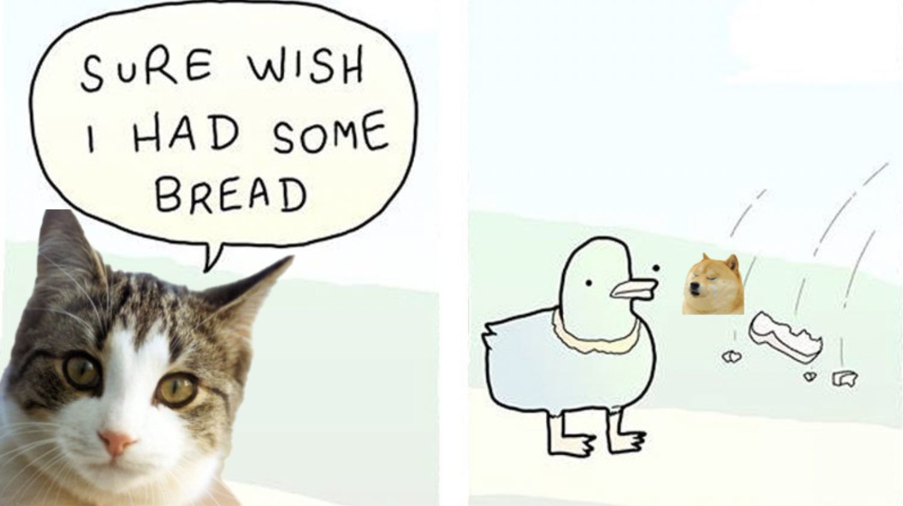

"Sure Wish I Had Some Bread" reaction meme with a Cat and Doge crying. I wanted to make a funny picture about feeling sad over something small. The cat and Doge are crying because they want bread, which makes the situation look very serious. The speech bubble shows what the cat is thinking. I used simple drawings, soft colors, and dark outlines so the images would look like they belong together. The crying faces make the picture funny because most people would not cry over bread. My artwork shows how people can overreact to small problems. I wanted the final image to feel silly, cute, and easy to understand.
